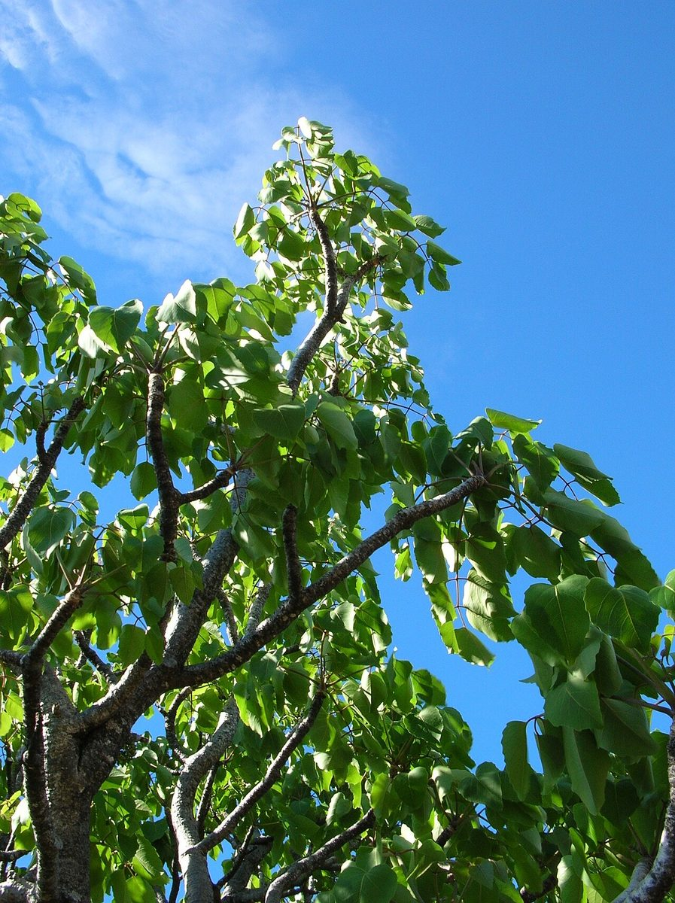
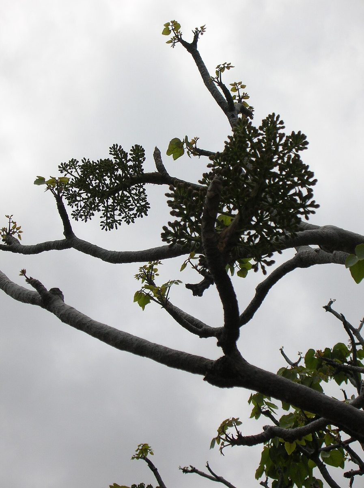

NOTABLE Sea cliff Valley mouth
Polyscias sandwicensis
ʻohe makai, ʻohe · Hawaiian polyscias



Quick facts
| Family | Araliaceae |
|---|---|
| Scientific name | Polyscias sandwicensis |
| Hawaiian name(s) | ʻohe makai, ʻohe |
| English name(s) | Hawaiian polyscias |
| Status | Endemic |
| Conservation | — |
| Coastal zones | Sea cliff Valley mouth |
| Occurrence | Dry coastal slopes and cliff bases of the drier western Nā Pali–Kona sector; often on rocky substrate above the strand. Once more widespread; now scattered. |
Uncertainty: Nomenclatural change (not a factual dispute): ʻohe makai was transferred from the genus *Reynoldsia* to *Polyscias* by Lowry & Plunkett (2010). Many Hawaiian field guides, botanical-garden labels, and photograph metadata (including some images used in this profile) still use "*Reynoldsia sandwicensis*"; the two names refer to the same species. This guide adopts the current name and lists the synonym here so identifications made from older sources are not disrupted.
How to identify
- Growth form
- Small-to-medium tree, distinctive for its thick, fleshy, water-storing trunk when young — the trunk narrows with age and develops rough bark. Deciduous during the dry season.
- Size
- 3–10 m tall.
- Leaves
- Clustered at the branch tips; pinnately compound with 5–9 leaflets on a long rachis, each leaflet ovate, 5–10 cm long, entire-margined or with fine teeth. The tree drops its leaves during dry-season stress, giving a starkly bare branch structure.
- Flowers
- Very large terminal panicles of many small (~4 mm), 5-parted, yellow-green to whitish flowers — the inflorescence is disproportionately large relative to the tree.
- Fruit / seed
- Small drupe, 3–5 mm, ripening purple-black in clusters on the panicle.
- Bark / stem
- Pale grey-green and smooth on the swollen juvenile trunk; becoming rough and fissured with age. Wood soft and light when cut.
- Where it sits on the coast
- Dry sea-cliff bases and rocky slopes above the strand on the western/leeward sector — not on the wet windward valleys.
Clinchers (features that lock the ID)
- Thick, fleshy, water-storing juvenile trunk — no other coastal Kauaʻi tree looks like this.
- Pinnately compound leaves clustered at the branch tips.
- Very large terminal panicle of tiny yellowish flowers.
- Deciduous during dry season — bare branch structure diagnostic when leafless.
Look-alikes
- Other coastal Araliaceae — No close look-alike on the coastal Kauaʻi flora at this size. Interior dry-forest Araliaceae (e.g., other *Polyscias* spp.) occur off the coast; coastal occurrence combined with the swollen trunk is diagnostic.
Ecology
A drought-adapted dry-forest and dry-coastal endemic that stores water in its trunk and drops its leaves during the driest months. Fruits are dispersed by frugivorous birds. [1], [2], [3], [31], [33]
Cultural significance
ʻOhe makai wood was used historically for tapa beaters, canoe parts, and other implements per Rock (1913); this guide names those relationships without providing working technique.